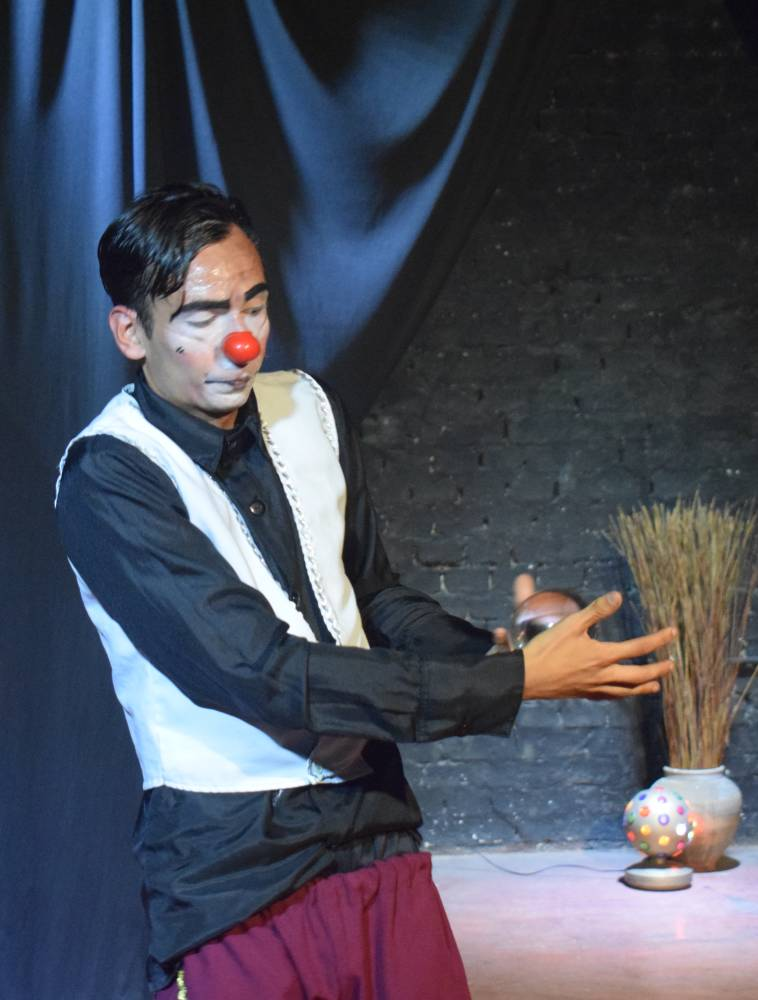

LA MAGIA SIEMPRE ESTUVO AHÍ
El último aplauso del circo callejero
Hubo un tiempo en que el circo parecía el lugar más cercano a la magia. Para muchos niños latinoamericanos, crecer significó esperar con ansiedad la llegada de aquellas enormes carpas que transformaban cualquier lote vacío en un universo imposible. Durante algunos días, la ciudad dejaba de ser rutina para convertirse en espectáculo. Entonces aparecían los afiches gigantes pegados en las paredes, los desfiles promocionales por las avenidas y aquella música inconfundible que parecía anunciar que algo extraordinario estaba a punto de suceder. Y sucedía. El olor a crispetas recién hechas, algodón de azúcar y maní confitado se mezclaba con el asombro de ver animales que hasta entonces solo existían en los libros, la televisión o la imaginación de los niños: tigres, elefantes, jirafas, camellos y caballos perfectamente entrenados. Bajo las luces del circo, los trapecistas parecían desafiar la gravedad y los payasos tenían la extraña capacidad de hacernos olvidar cualquier preocupación durante un par de horas. Todo parecía posible dentro de aquella carpa. Por eso resulta inevitable sentir nostalgia cuando, décadas después, un malabarista aparece en un semáforo de la Diagonal Santander y, durante apenas noventa segundos, nos devuelve una pequeña parte de aquella infancia. Porque el circo nunca desapareció del todo. Solo cambió de escenario.


Hoy ya no llegan con la misma frecuencia las enormes caravanas de tráileres ni los legendarios espectáculos que marcaron generaciones enteras, como el Circo Egred Hermanos, el espectáculo más grande de la historia nacional; el Circo Gigante Modelo, punta de lanza de los Fuentes Gasca, una respetable familia de cirqueros mexicanos que echó raíces en Colombia o el inolvidable Orlando Orfei y su Circo Nazionale d’Italia. Las grandes compañías itinerantes tuvieron que enfrentarse al paso del tiempo, a los enormes costos de mantenimiento, al crecimiento del entretenimiento digital y a nuevas discusiones sobre el uso de animales en espectáculos circenses. Sin embargo, el espíritu del circo encontró otra manera de sobrevivir. Ahora aparece en las esquinas. En las intersecciones más transitadas de Cúcuta, entre motocicletas impacientes, vendedores ambulantes y pitos de automóviles apresurados, todavía existen artistas capaces de convertir un semáforo en un pequeño escenario. Funámbulos, malabaristas y payasos continúan haciendo del riesgo una forma de arte y del aplauso una manera de resistir. Muchos de ellos viven una realidad difícil. Detrás de cada acto hay jornadas agotadoras bajo el sol, largas horas de ensayo y la incertidumbre de no saber cuánto dinero lograrán reunir al final del día. Lo que para algunos conductores dura apenas un cambio de luz, para ellos representa su sustento, su oficio y, en muchos casos, su única manera de seguir adelante. Y aun así, sonríen. Tal vez porque entienden algo que el resto de la ciudad suele olvidar: el asombro sigue siendo necesario.
Los artistas circenses callejeros son, de alguna manera, los últimos sobrevivientes del circo clásico. Herederos silenciosos de un arte con más de dos mil años de historia que se niega a desaparecer. Hombres y mujeres que crecieron entre carpas, y aplausos, y que hoy continúan guardando ese legado en medio del ruido urbano y la indiferencia cotidiana. Quizás por eso conmueven tanto. Porque detrás del maquillaje, las pelotas de malabar o la cuerda suspendida en el aire, seguimos viendo al héroe de nuestra infancia. Solo que ahora entendemos algo que de niños no podíamos comprender: hacer reír, sorprender o emocionar también puede ser un acto de valentía. En una ciudad golpeada por las dificultades económicas y las heridas propias de la frontera, el circo callejero sigue recordándonos que todavía existe espacio para la imaginación. Y que, incluso en medio del caos, siempre habrá alguien dispuesto a regalarnos un instante de magia antes de que el semáforo vuelva a cambiar a verde.